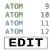

CCP4i2 Task Documentation
Import merged data, sequences, alignments or coordinates
Import reflection data in any format, report on contents and create CCP4i2 data objects
Enter a sequence from a sequence file, from a PDB, or by cut and paste
Enter an alignment from a file or by cut and paste
Harvest merged and unmerged files from selected XIA2 data reduction protocols
Select (potentially complicated) subset from a coordinate set

Define contents of crystal
Provide list of chain sequences- import sequence or from coordinate file
Select groups of columns from the MTZ file (csplitmtz)
Automated integration of images with DIALS - XIA2
Select a directory containing images and integrate them
Automated integration of images with DIALS using xia2
Select a directory containing images and integrate them
Launch iMosflm and capture output
X-ray data reduction and analysis
Scale and analyse unmerged data and suggest space group (Pointless, Aimless, Ctruncate, FreeRflag)
Generate a Free R set for a complete set of reflection indices to a given resolution (FreeRflag)
Estimate number of molecules in the asymmetric unit and solvent content (Matthews_coeff)
Calculate self rotation function
Evaluate data for anisotropy, optical resolution, pseudo translation and perform self-rotation function (Molrep)

Experimental phasing
CRANK2 experimental phasing pipeline
Experimental phasing pipeline SHELX (run via Crank2)
SAD phasing from heavy atom sites - PHASER
Complete a heavy atom model and calculate phases
ACORN - Phase Refinement with Dynamic Density Modification
Un-biased improvement of initial phases for high resolution data (1.5 Angstoms and better)
Modify the electron density (Parrot)

Bioinformatics including model preparation for Molecular Replacement
Identify MR models with MrBUMP, display and select with CCP4mg
Use CCP4mg to select components of a search model and output to i2 for MR
Truncate and renumber model prior to molecular replacement
Truncate model prior to molecular replacement
Build an ensemble for PHASER
Compile assorted related structures into an ensemble for use in PHASER
Align sequences using clustalw
Run a quick MrBUMP job with streamlined settings

Basic Molecular Replacement - PHASER
Simple MR with optional refinement and rebuilding (Phaser)
Advanced MR options followed by refinement and rebuilding (Phaser, Refmac5, Coot)
Molecular replacement (Molrep)
Molecular replacement with electron density - MOLREP
Use electron density as the search model (Molrep)
Match symmetry and origin of output model to reference structure (Csymmatch)
Modify the electron density (Parrot)
Model building and Graphics
Iterations of model building (Buccaneer) and refinement (Refmac5, Prosmart and Coot)
Interactive building (Coot)
Use scripts to fit sidechains, perform stepped refinement, fill and fit... (non-interactive Coot)
Find and filter waters based on electron density and contacts (non-interactive Coot)

ARP/wARP
Build model (ARP/wARP classic)
Interactive molecular graphics: visualization, figure preparation, analysis.
Model building from Molecular Replacement solution using Shelxe
Use Shelxe to attempt to improve (or verify) a solution from Molecular Replacement

Refinement
Refine (Refmac5) with optional restraints (Prosmart)
Import and/or edit TLS set definitions
Enter TLS information to be used later in the project

Rigid body refinement - PHASER
Define rigid bodies for refinement (Phaser), fill partial residues (Coot) and refine (Refmac)

Ligands
Generate a PDB file and dictionary (acedrg) from MOL file, SMILES, or sketch (lidia)

Automated solution of isomorphous ligand complex
A ligand workflow, starting from merged or unmerged reflections, SMILES, and an isomorphous parent structure
Calculates real-space metrics for evaluating the agreement between model and density (Edstats, cfft)
Interface and quaternary structure analysis - PISA
Interface and assembly analysis (qtpisa)
Validation of carbohydrate structures - PRIVATEER
Checks stereochemistry, conformation and fit to positive omit density, and describes glycans (Privateer)
Calculate mean B-factors, Ramachandran plots and other metrics to aid in validation (Clipper)
Prepare files for deposition
Export 'old' style MTZ file
Reindex to match reference data/coordinates and/or change space group of reflections or Free R set (Pointless)
Calculate anomalous LLG map phased by coordinates to highlight anomalous scatterers (Phaser)
Compute map coefficients from set of observations and phases (cmapcoeff)
Interconvert phases between Hendrickson Lattman and Phi/FOM representation
Compare phases from different sources (with option change of origin/hand)
Convert reflection intensities to structure factors (ctruncate)
Generate a Free R set for a complete set of reflection indices to a given resolution (FreeRflag)
Estimate number of molecules in the asymmetric unit and solvent content (Matthews_coeff)
Match symmetry and origin of output model to reference structure (Csymmatch)
Superpose one protein structure on another
Select (potentially complicated) subset from a coordinate set

Edit PDB/CIF files by hand
Edit PDB/CIF files by hand with the PdbView program

Developer tools

Export monster mtz
Build an MTZ file from data objects
Test CCP4i2 observed data interconversions
Exercise CCP4i2 Observed data representation conversions